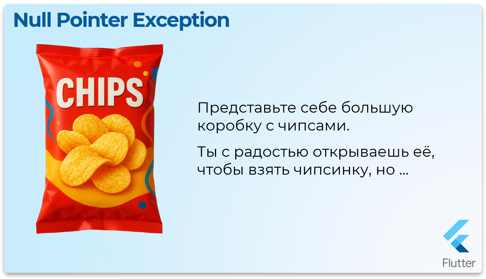
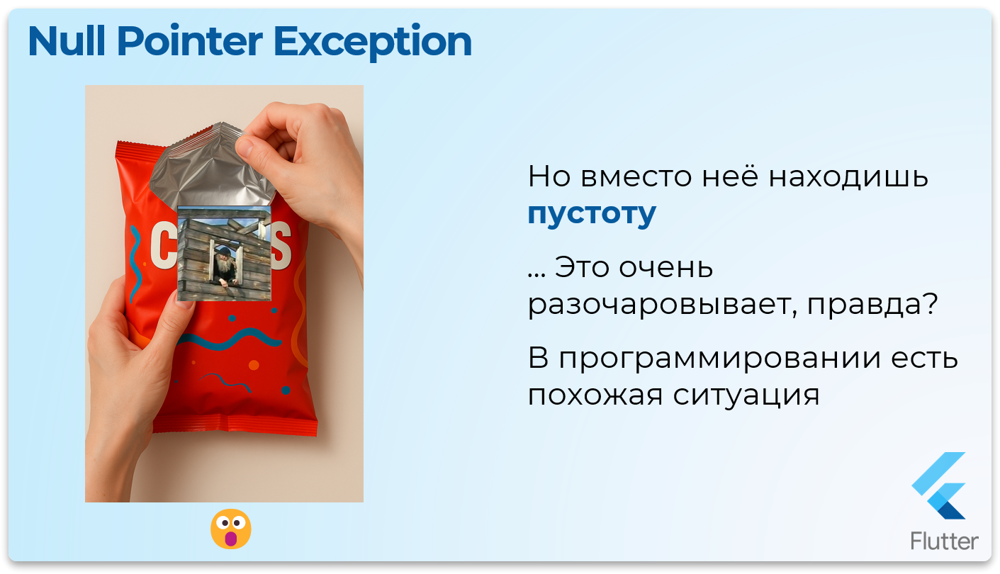
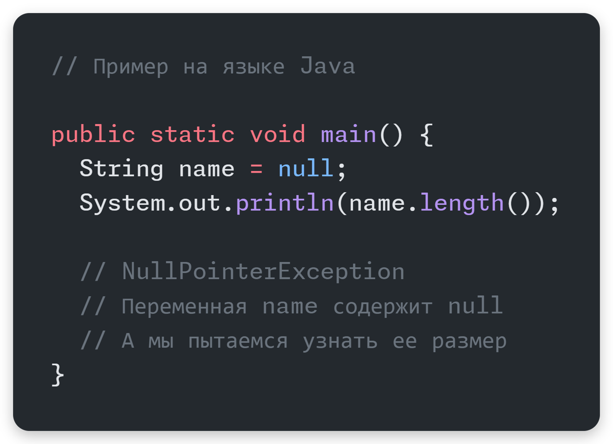
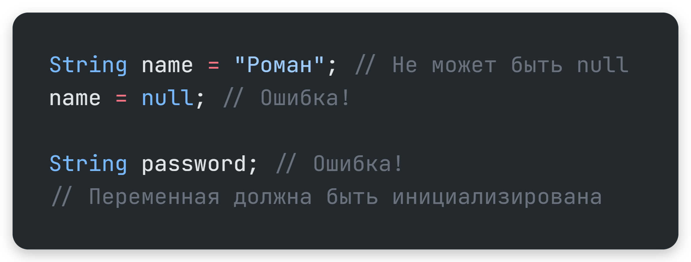
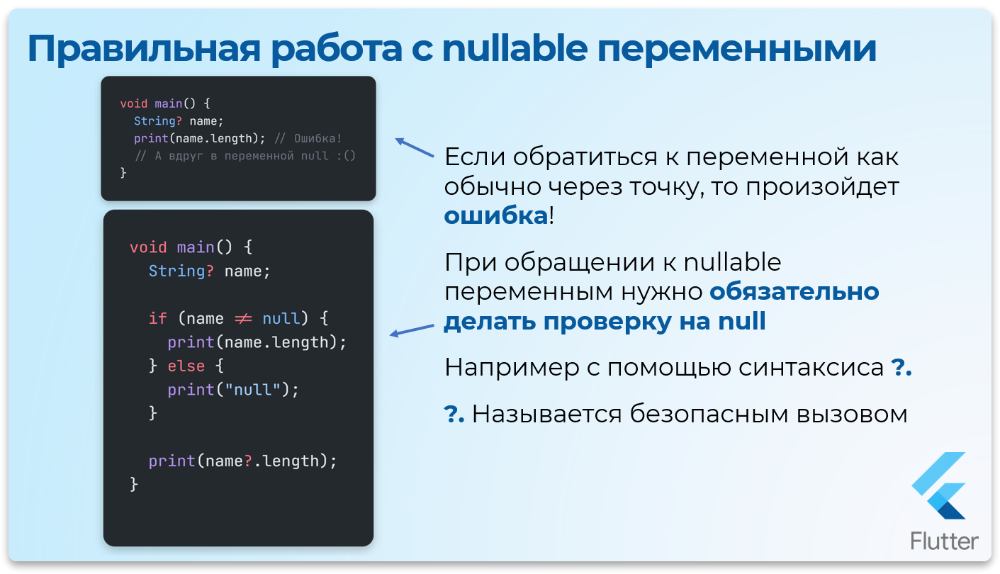
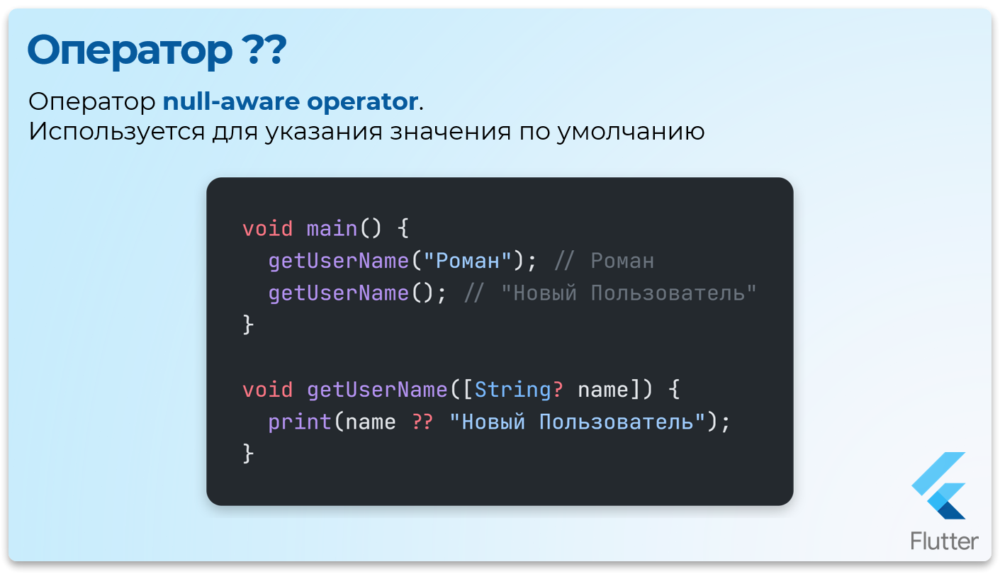
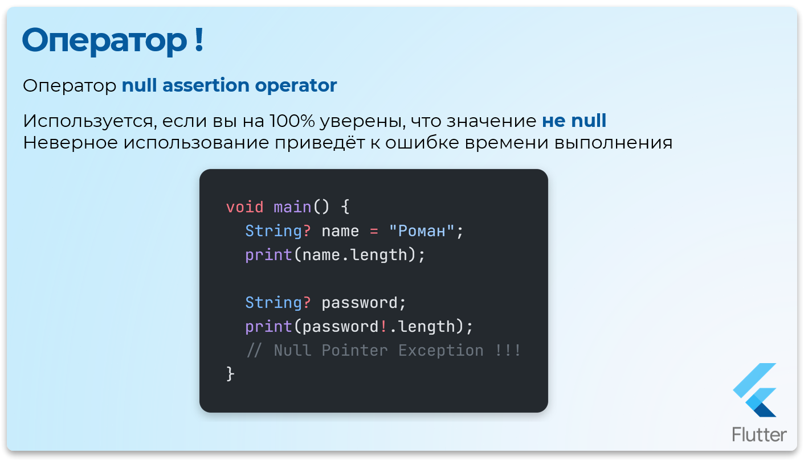

Null Safety в Dart
Ошибка на миллиард долларов
Представьте себе большую коробку с чипсами. Ты с радостью открываешь её, чтобы взять чипсинку, но …
Но вместо неё находишь пустоту … Это очень разочаровывает, правда?


В программировании есть похожая ситуация, только вместо упаковки с чипсами есть переменная.
А вместо чипсинки – какое-то значение.
Иногда эта переменная может быть пустой, то есть не содержать никакого значения. Это как пустая упаковка.
NullPointerException – это та исключительная ситуация, когда программа пытается использовать пустую переменную. Такая переменная содержит значение null
Это как попытаться съесть чипсинку, которой нет. Программа не знает, что делать в такой ситуации, и поэтому выдает ошибку – NullPointerException
Почему NullPointerException это очень плохо
Программа "падает"- приNullPointerException, программа останавливается и перестает выполнять свои задачи.Трудно найти ошибку- очень сложно найти место в программе, где возникает эта ошибка. Это как искать иголку в стоге сена.Непредсказуемое поведение- если программа не обрабатываетNullPointerException, она может начать вести себя непредсказуемо. Например, показывать неправильные результаты или даже повреждать данные.

Программа не знает, какая длина у ничего
История создания null
Создатель концепции null, Тони Хоар, назвал своё изобретение "ошибкой на миллиард долларов" из-за неисчислимых убытков, которые она принесла за десятилетия в виде сбоев программ, уязвимостей и потраченного времени разработчиков.
В 1965 году Тони Хоар (Sir Tony Hoare), работая над языком программирования ALGOL W, ввёл концепцию null reference — специального значения, обозначающего "отсутствие объекта" или "ничего" для ссылочных типов.
Позже, выступая на конференции в 2009 году, Хоар публично извинился за это решение и назвал его "ошибкой на миллиард долларов" ("billion-dollar mistake")
Прямая цитата Тони Хоара:
"Я называю это своей ошибкой на миллиард долларов. Это было изобретение null-ссылки в 1965 году. В то время я разрабатывал первую комплексную систему типов для ссылок в объектно-ориентированном языке (ALGOL W). Моя цель была — сделать все использования ссылок абсолютно безопасными, с автоматической проверкой компилятором. Но я не смог устоять перед искушением добавить null-ссылку, просто потому что это было так легко реализовать. Это привело к бесчисленным ошибкам, уязвимостям и сбоям систем, которые, вероятно, причинили боли и убытков на миллиард долларов за последние сорок лет."
Как справлялись раньше?
Программистам приходилось вручную писать бесчисленные проверки.
Это работало, но было громоздко, и главное — можно было легко забыть про проверку.
Dart - Старый подход

if (name != null) {
print(name.length);
} else {
print(0);
}Философия Null Safety в Dart
Начиная с версии 2.12, Dart ввёл строгую Null Safety (нулевую безопасность).
Основная идея гениальна и проста:
По умолчанию, ни одна переменная не может быть
null.
Это означает, что компилятор теперь — ваш лучший друг и защитник. Он просто не позволит вам создать переменную, которая может случайно стать null.

Dart - Null Safety в действии
int a = 42;
a = null; // ОШИБКА КОМПИЛЯЦИИ! 'a' не может быть null.
String text; // ОШИБКА КОМПИЛЯЦИИ! Переменная должна быть инициализирована.Преимущества этого подхода
- Надёжность: Огромный класс ошибок просто исчезает. Ваш код становится предсказуемым.
- Производительность: Компилятор уверен, что переменные не
null, и может проводить оптимизации, делая ваш код быстрее и компактнее.
Nullable и Non-Nullable типы
В Dart есть два вида типов:
Non-nullable(не могутnull): Все типы по умолчанию.int,String,List<double>Nullable(могутnull): Те же типы, но с добавлением знака?в конце.int?,String?,List<double>?
Например
Dart - Nullable и Non-Nullable типы
int nonNullableInt = 10;
// nonNullableInt = null; // Ошибка
int? nullableInt = 10;
nullableInt = null; // Всё в порядкеДаже var подчиняется этому правилу. Если вы не инициализируете var сразу, она считается dynamic, которая может быть null.
Dart - var и dynamic
var someVar; // Тип dynamic, значение - null
print(someVar); // Выведет: nullРабота с Nullable-переменными
1. Прямая проверка на null
Это самый понятный способ.
Компилятор Dart умён и понимает, что внутри блока if (variable != null) переменная точно не null.

Dart - Проверка на null
int getLength(String? str) {
if (str != null) {
// Внутри этого блока str считается non-nullable String
return str.length;
}
return 0;
}
print(getLength("Hello")); // 5
print(getLength(null)); // 02. Оператор ??
Очень удобен для предоставления значения по умолчанию.
Читается как "если слева null, то взять то, что справа".

Dart - Оператор ??
int? nullableInt;
int value = nullableInt ?? 0; // Если nullableInt равен null, value станет 0.
print(value); // 0Есть также оператор ??=, который присваивает значение, только если переменная null.
Dart - Оператор ??=
int? value2 = null;
value2 ??= 42; // value2 был null, поэтому ему присвоили 42
print(value2); // 42
value2 ??= 99; // value2 уже не null, ничего не произойдет
print(value2); // 423. Оператор ?.
Позволяет вызвать метод или получить свойство, только если объект не null. Если объект null, всё выражение вернёт null и программа не упадет.
Dart - Оператор ?.
String? text; // null
// Вместо того чтобы упасть, это выражение просто вернёт null
print(text?.length); // Выведет: null
text = "Dart";
print(text?.length); // Выведет: 4Операторы ! и late
4. Оператор !
Этот оператор — способ сказать компилятору:
"Я на 100% уверен, что в этом месте переменная не null. Поверь мне и позволь мне её использовать".
Dart - Оператор !
List<int?> listWithNulls = [2, null, 4];
int firstItem = listWithNulls.first!; // Мы уверены, что первый элемент не null
print(firstItem); // 2Используйте с огромной осторожностью! Если вы ошиблись и переменная окажется
null, ваша программа упадёт с ошибкой. Оператор!— это, по сути, отключение защиты для одной конкретной операции.

5. Модификатор late
late говорит компилятору: "Обещаю, я инициализирую эту non-nullable переменную позже, но точно до того, как попытаюсь её использовать".
У late есть два основных применения:
а) Отложенная инициализация: Полезно для полей класса, которые не могут быть инициализированы сразу.
Dart - Отложенная инициализация
class MyClass {
late String description; // Обещаем инициализировать позже
MyClass(String initialText) {
// Выполняем какую-то сложную логику и только потом инициализируем
description = 'This is a description: $initialText';
}
}б) Ленивая инициализация: Переменная будет инициализирована не в момент объявления, а только при первом обращении к ней. Это полезно, если инициализация — ресурсозатратная операция.
Dart - Ленивая инициализация
int _calculateHeavyValue() {
print('Выполняется очень сложный расчет...');
return 42;
}
// как будто вызывает функцию _calculateHeavyValue()
// но нет ... пока не вызовим heavyValue функция не сработает
late int heavyValue = _calculateHeavyValue();
void main() {
print('Программа запущена.');
// Функция _calculateHeavyValue() еще не вызвана
print('Сейчас мы обратимся к переменной...');
print(heavyValue); // Вот здесь будет вызван _calculateHeavyValue()
}Внимание! Если вы пометили переменную как
late, но забыли её инициализировать и попытались прочитать, вы получите ошибку времени выполнения (LateInitializationError).
Null Safety и коллекции (List, Map)
Null Safety позволяет очень гибко настраивать коллекции. Вы можете контролировать, может ли сама коллекция быть null и могут ли её элементы быть null.
Списки List
Dart - Null Safety в списках
// ни список, ни его элементы не могут быть null
List<String> = ['Dart', 'Swift'];
// список не может быть null, но его элементы могут
List<String?> = ['Dart', null, 'Swift'];
// список может быть null
List<String>? = null;
// и сам список, и его элементы могут быть null
List<String?>? = ['Dart', null, 'Swift'];Особый случай Словари Map
При обращении к Map по ключу, которого там нет, он возвращает null. Поэтому результат такого обращения всегда nullable.
Dart - Null Safety в Map
var myMap = <String, int>{'one': 1};
print(myMap['two']); // Выведет: null
// int value = myMap['one']; // ОШИБКА! Вдруг ключа 'one' не будет?
int? value1 = myMap['one']; // Правильно. value1 имеет тип int?
int value2 = myMap['one']!; // Уверенность, что ключ есть.
int value3 = myMap['two'] ?? 0; // Безопасно с значением по умолчанию.